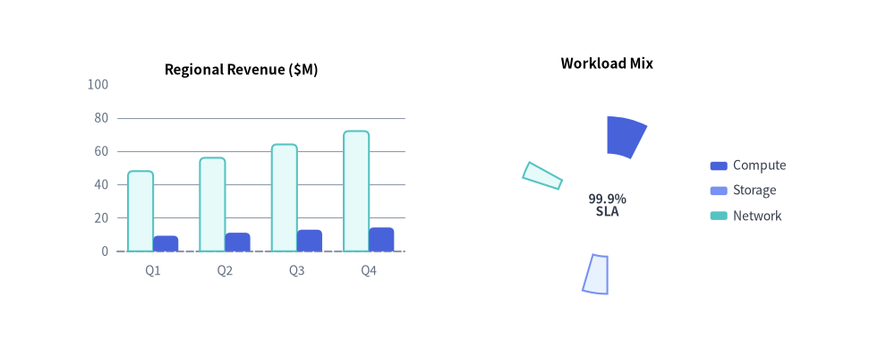
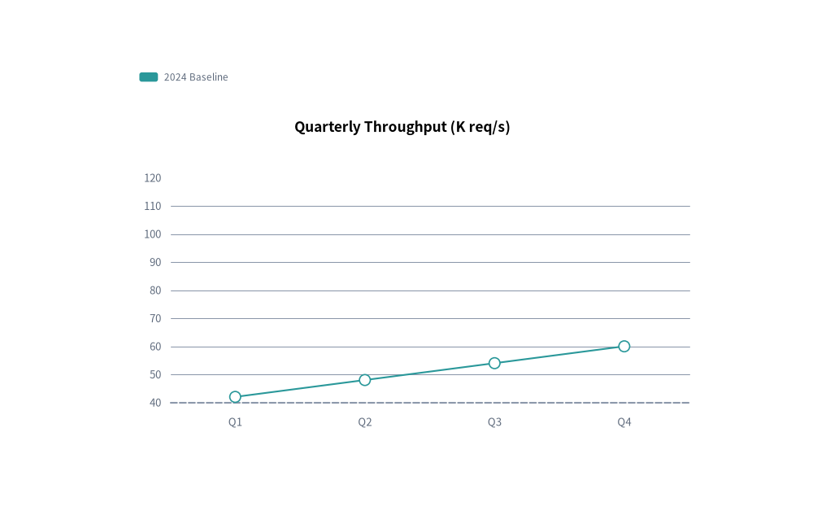
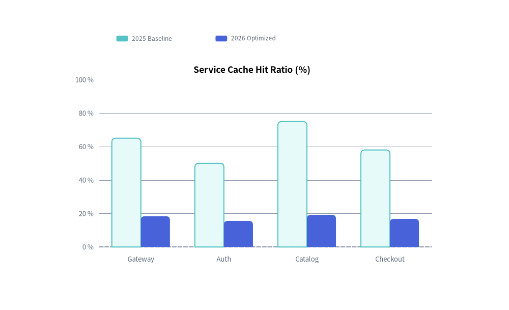

Animating Charts
All 7 chart classes in drawlib.charts (BarChart, LineChart, AreaChart, PieChart, RadarChart, ScatterChart, GanttChart) follow the Pre-Build & Mutate lifecycle:

Source Code
from drawlib.anim import Animation
from drawlib.canvas import save, setup
from drawlib.charts.bar import BarChart
from drawlib.charts.pie import PieChart
from drawlib.styles import Styles
setup(width=126, height=48)
anim = Animation(fps=10.0)
bar = BarChart(
categories=["Q1", "Q2", "Q3", "Q4"],
axis_line_style=Styles.MutedDashed,
axis_text_style=Styles.Muted.patch(text_size=10.0),
grid_style=Styles.MutedThin,
width=52,
height=33,
title="Regional Revenue ($M)",
title_style=Styles.BlackBold.patch(text_size=11.0),
bar_r=0.7,
)
bar.configure_y_axis(min_value=0, max_value=100)
s_base = bar.add_series("2025", [48, 56, 64, 72], style=Styles.SecondaryNeutral)
s_curr = bar.add_series("2026", [62, 74, 86, 95], style=Styles.PrimaryFlat)
pie = PieChart(
radius=12.5,
hole_ratio=0.58,
center_text="99.9%\nSLA",
center_text_style=Styles.DarkBold.patch(text_size=10.0),
title="Workload Mix",
title_style=Styles.BlackBold.patch(text_size=11.0),
)
sl1 = pie.add_slice("Compute", 50.0, style=Styles.PrimaryFlat)
sl2 = pie.add_slice("Storage", 30.0, style=Styles.PrimaryNeutral)
sl3 = pie.add_slice("Network", 20.0, style=Styles.SecondaryNeutral)
slices = [sl1, sl2, sl3]
for r in [0.15, 0.35, 0.55, 0.80, 1.0]:
s_curr.draw_ratio = r
for sl in slices:
sl.draw_ratio = r
is_last = (r == 1.0)
with anim.frame(duration=2.2 if is_last else 0.12):
bar.draw(xy=(8.0, 7.5))
pie.draw(xy=(69.0, 2.5))
pie.draw_legend(xy=(100.0, 24.5), text_style=Styles.Dark.patch(text_size=10.0))
save()
- Instantiate the chart and register all series, slices, or tasks once outside the loop (
s = chart.add_series(...),sl = chart.add_slice(...),t = chart.add_task(...)). - Inside
with anim.frame():, mutate.show,.draw_ratio(0.0to1.0), or.draw_direction("bottom_to_top"or"left_to_right"), and callchart.draw(xy=..., scale=1.0).
1. Progressive Series Reveal (s.show)
Because Drawlib computes automatic axis bounds (min_value, max_value, tick_step), pie proportions, and Gantt row heights across all registered elements regardless of show=False, toggling s.show = True across frames reveals series one by one without ever shifting or rescaling the chart axes:
from drawlib.anim import Animation
from drawlib.canvas import save, setup
from drawlib.charts.line import LineChart
from drawlib.styles import Styles
setup(width=105, height=66)
anim = Animation(fps=1.2)
chart = LineChart(
categories=["Q1", "Q2", "Q3", "Q4"],
axis_line_style=Styles.MutedDashed,
axis_text_style=Styles.Muted.patch(text_size=10.0),
grid_style=Styles.MutedThin,
width=82,
height=44,
title="Quarterly Throughput (K req/s)",
title_style=Styles.BlackBold.patch(text_size=12.0),
smooth=True,
)
s1 = chart.add_series("2024 Baseline", [42, 48, 54, 60], style=Styles.Secondary, line_style="dashed")
s2 = chart.add_series("2025 Target", [50, 65, 78, 92], style=Styles.Accent)
s3 = chart.add_series("2026 Actual", [55, 76, 94, 115], style=Styles.Primary, line_width=2.5)
series_list = [s1, s2, s3]
for step in range(len(series_list)):
for i, s in enumerate(series_list):
s.show = (i <= step)
is_last = (step == len(series_list) - 1)
with anim.frame(duration=2.5 if is_last else 0.9):
chart.draw(xy=(11, 8))
chart.draw_legend(xy=(15, 56), text_style=Styles.Muted.patch(text_size=10.0), orientation="horizontal")
save()

2. Partial Spatial Growth (s.draw_ratio & s.draw_direction)
Every Series, Slice, and Task supports built-in partial spatial rendering via draw_ratio: float (0.0 to 1.0) and draw_direction: DrawDirection ("bottom_to_top" or "left_to_right"):
BarChart:"bottom_to_top"(default) grows all bars vertically from the baseline;"left_to_right"reveals bars sequentially category-by-category.LineChart/AreaChart:"left_to_right"(default) sweeps the curve continuously from left to right;"bottom_to_top"rises vertically from the baseline.ScatterChart:"left_to_right"(default) sweeps series points across the X-axis range (x <= x_min + (x_max - x_min) * r);"bottom_to_top"rises from the bottom axis toward targetywhile scaling markerradiusbyr. Individual standalone points registered viapt = chart.add(x, y, ...)also exposept.show: boolandpt.style: Style.PieChart:"left_to_right"(default) sweeps the wedge angularly;"bottom_to_top"expands radially outward.RadarChart:"bottom_to_top"(default) expands the polygon radially from the center;"left_to_right"sweeps spoke-by-spoke.GanttChart:"left_to_right"(default) extends task bars horizontally fromstarttowardend;"bottom_to_top"grows task bars vertically from their bottom edge.
from drawlib.anim import Animation
from drawlib.canvas import save, setup
from drawlib.charts.bar import BarChart
from drawlib.styles import Styles
setup(width=105, height=64)
anim = Animation(fps=10.0)
chart = BarChart(
categories=["Gateway", "Auth", "Catalog", "Checkout"],
axis_line_style=Styles.MutedDashed,
axis_text_style=Styles.Muted.patch(text_size=10.0),
grid_style=Styles.MutedThin,
width=82,
height=44,
title="Service Cache Hit Ratio (%)",
title_style=Styles.BlackBold.patch(text_size=12.0),
bar_r=0.8,
)
chart.configure_y_axis(min_value=0, max_value=100, unit="%")
s1 = chart.add_series("2025 Baseline", [65, 50, 75, 58], style=Styles.SecondaryNeutral)
s2 = chart.add_series("2026 Optimized", [92, 78, 96, 84], style=Styles.PrimaryFlat)
for r in [0.2, 0.4, 0.6, 0.8, 1.0]:
s2.draw_ratio = r
is_last = (r == 1.0)
with anim.frame(duration=2.2 if is_last else 0.12):
chart.draw(xy=(11, 8))
chart.draw_legend(xy=(21, 56), text_style=Styles.Muted.patch(text_size=10.0), orientation="horizontal")
save()

3. Project Schedule Reveal (GanttChart)
In GanttChart, every registration method returns a mutable model object:
Task(gantt.add_task(...)):.show,.style,.text_style,.draw_ratio,.draw_direction("left_to_right"or"bottom_to_top"). Hiding aTask(task.show = False) also automatically hides anyDependencyarrows connected tofrom_taskorto_task.Section(gantt.add_section(...)):.show,.style,.text_style.Milestone(gantt.add_milestone(...)):.show,.style,.text_style.Marker(gantt.add_marker(...)):.show,.style,.text_style.Dependency(gantt.add_dependency(...)):.show,.style.
Mutating task.show and task.draw_ratio reveals and extends task bars along the timeline while keeping all row lanes and column headers fixed:
from drawlib.anim import Animation
from drawlib.canvas import save, setup
from drawlib.charts.gantt import GanttChart
from drawlib.styles import Styles
setup(width=110, height=54)
anim = Animation(fps=8.0)
gantt = GanttChart(
columns=["W1", "W2", "W3", "W4", "W5"],
axis_line_style=Styles.MutedDashed,
axis_text_style=Styles.Black.patch(text_size=10.0),
grid_style=Styles.MutedThin,
header_style=Styles.MutedThin,
zebra_style=Styles.MutedThin,
width=96.0,
label_width=30.0,
header_height=6.2,
row_height=6.2,
title="Release Rollout Schedule",
title_style=Styles.BlackBold.patch(text_size=12.0),
bar_radius=1.0,
)
t1 = gantt.add_task("1. Schema Design", start="W1", end=1.2, style=Styles.PrimaryNeutral)
t2 = gantt.add_task("2. Core Engine", start="W2", end=3.2, style=Styles.PrimaryFlat, show=False)
t3 = gantt.add_task("3. Production GA", start="W4", end=4.8, style=Styles.SecondaryNeutral, show=False)
tasks = [t1, t2, t3]
for idx, active_task in enumerate(tasks):
active_task.show = True
for r in [0.4, 0.8, 1.0]:
active_task.draw_ratio = r
is_final = (idx == len(tasks) - 1 and r == 1.0)
with anim.frame(duration=2.5 if is_final else 0.14):
gantt.draw(xy=(7, 7))
save()

4. Spatial Overrides & Proportional Scaling (draw & draw_legend)
Every chart's draw() and draw_legend() methods accept temporary spatial overrides and a uniform proportional scale: float = 1.0 factor anchored at xy:
- Cartesian & Gantt Charts (
BarChart,LineChart,AreaChart,ScatterChart,GanttChart):chart.draw(xy=(x, y), *, width=None, height=None, scale=1.0) - Radial Charts (
PieChart,RadarChart):chart.draw(xy=(x, y), *, radius=None, width=None, height=None, scale=1.0) - Standalone Legend:
chart.draw_legend(xy=(x, y), text_style=..., orientation="vertical"|"horizontal", swatch_size=(2.4, 1.2), item_gap=4.0, *, scale=1.0)
Passing scale != 1.0 scales the entire chart container, axis lines, bars/curves, markers, and typography proportionally without mutating the underlying chart configuration.